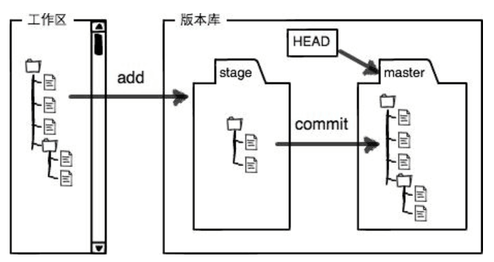

$ git config --global user.name "Your Name"
$ git config --global user.email "email@example.com"
--global应用于全局
$ mkdir 目录名
$ cd 目录名
$ pwd
pwd查看当前目录
$ git init
git init把这个目录变成Git可以管理的仓库
$ git add 文件名 文件名
$ git commit -m "说明信息"
git add可以一次性从工作区添加多个文件进暂存区
git commit把暂存区的文件添加进当前分支
$ git status
$ git diff 文件名
查看不同之后，用git add加入暂存区；确定提交前再用git status查看当前状态，无误后用git commit确定提交
$ git log
$ git log --pretty=oneline
git log查看历史提交；git log --pretty=oneline查看历史提交并返回版本号
$ git reset --hard HEAD^
HEAD^表示上一个版本；HEAD^^表示上上个版本……HEAD~100表示上100个版本
--hard参数
$ git reflog
git reflog查看历史命令，通过-m的说明信息，找到未来的版本号，用$ git reset --hard 1094a(版本号)回到未来。
$ cat 文件名
$ git checkout -- 文件名
1、文件自修改后还没有被放到暂存区，现在，撤销修改就回到和版本库一模一样的状态；
2、文件已经添加到暂存区后，又作了修改，现在，撤销修改就回到添加到暂存区后的状态。
$ git reset HEAD 文件名
git reset命令既可以回退版本，也可以把暂存区的修改回退到工作区。当我们用HEAD时，表示最新的版本。
场景1：当你改乱了工作区某个文件的内容，想直接丢弃工作区的修改时，用命令git checkout -- file。
场景2：当你不但改乱了工作区某个文件的内容，还添加到了暂存区时，想丢弃修改，分两步，第一步用命令git reset HEAD 文件名，就回到了场景1，第二步按场景1操作。
场景3：已经提交了不合适的修改到版本库时，想要撤销本次提交，参考版本回退一节，不过前提是没有推送到远程库。
$ rm文件名
$ git rm文件名
$ git commit文件名
rm删除工作区的文件
git rm再从版本库删除
执行git commit
……
$ git remote add origin git@github.com:github账户名/文件名.git
or
$ git remote add origin https://github.com/github账户名/文件名.git
$ git push -u origin master
由于远程库是空的，我们第一次推送master分支时，要加上-u参数,以后就用$ git push origin master
$ git clone git@github.com:github账户名/<文件名.git
建议先从GitHub上创建版本库，再克隆到本地仓库
$ git checkout -b dev
$ git branch
$ git merge dev
$ git checkout master
$ git branch -d dev
git checkout命令加上-b参数表示创建并切换分支
git branch查看当前分支，当前分支前面会标一个*号。
git merge dev把dev分支的工作成果合并到master分支上
git checkout master从dev分支切换回master分支
$ git branch -d dev删除dev分支
……
$ git remote
origin
git remote -v
查看远程库的信息，用git remote
git remote -v显示更详细的信息
当你从远程仓库克隆时，实际上Git自动把本地的master分支和远程的master分支对应起来了，并且，远程仓库的默认名称是origin
$ git push origin master
$ git push origin dev
master分支是主分支，因此要时刻与远程同步；
dev分支是开发分支，团队所有成员都需要在上面工作，所以也需要与远程同步；
未完待续……